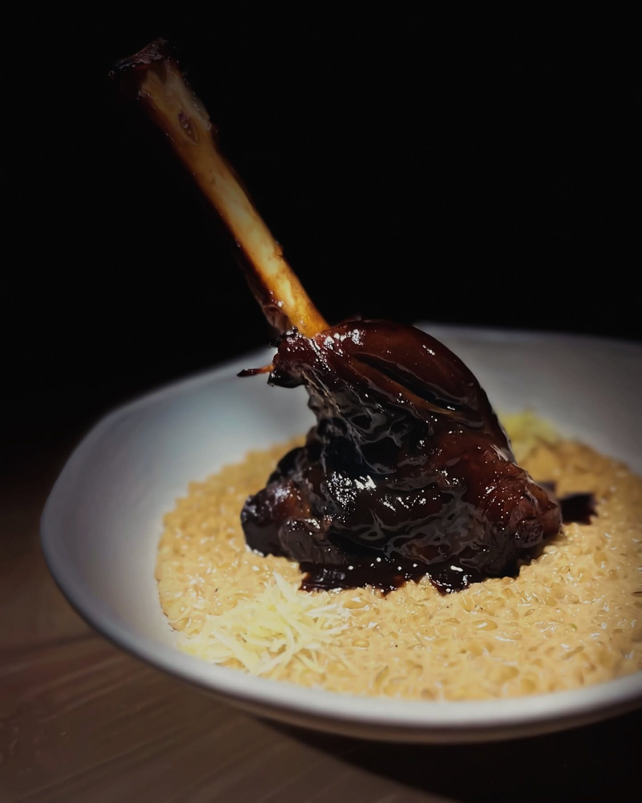
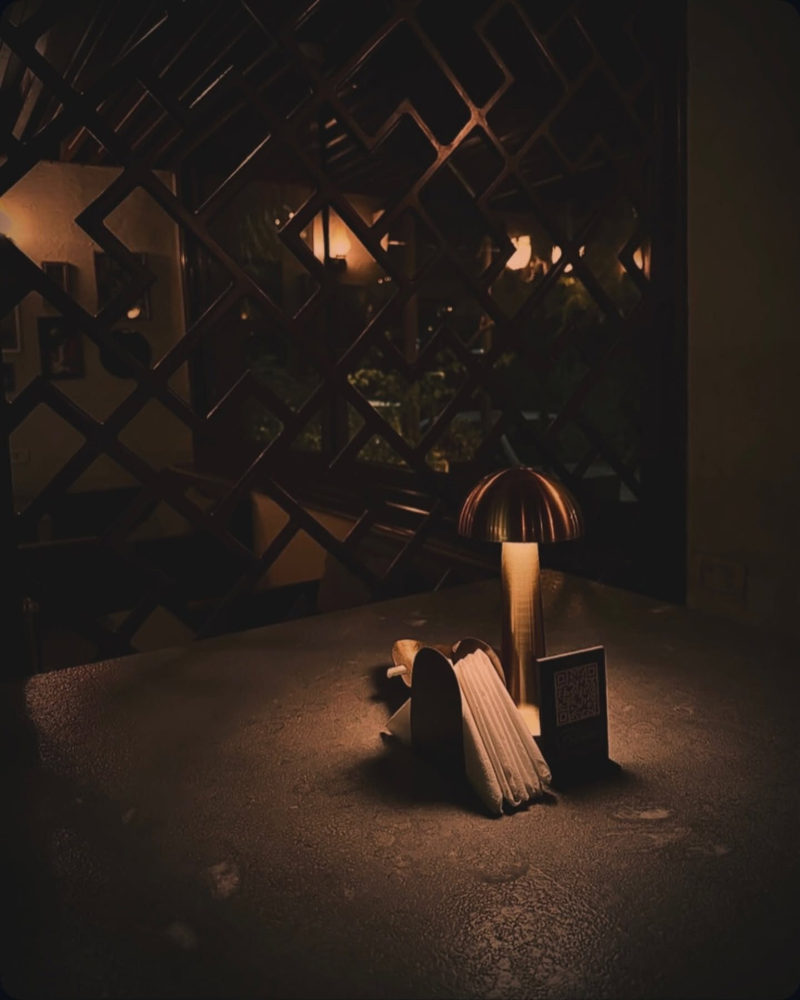
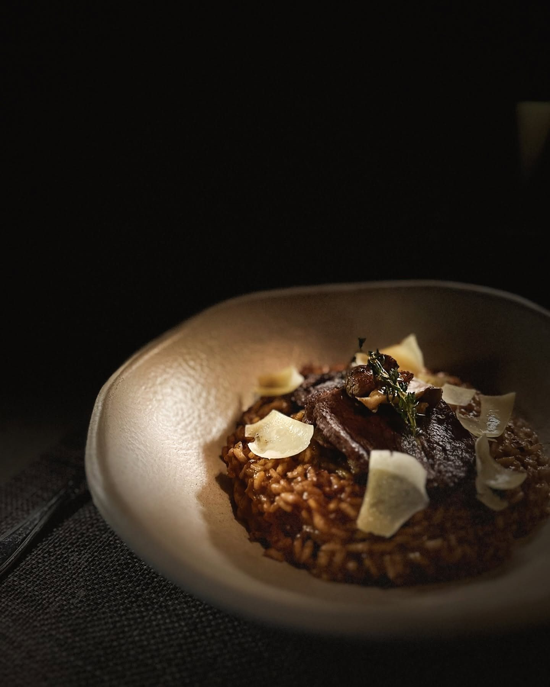
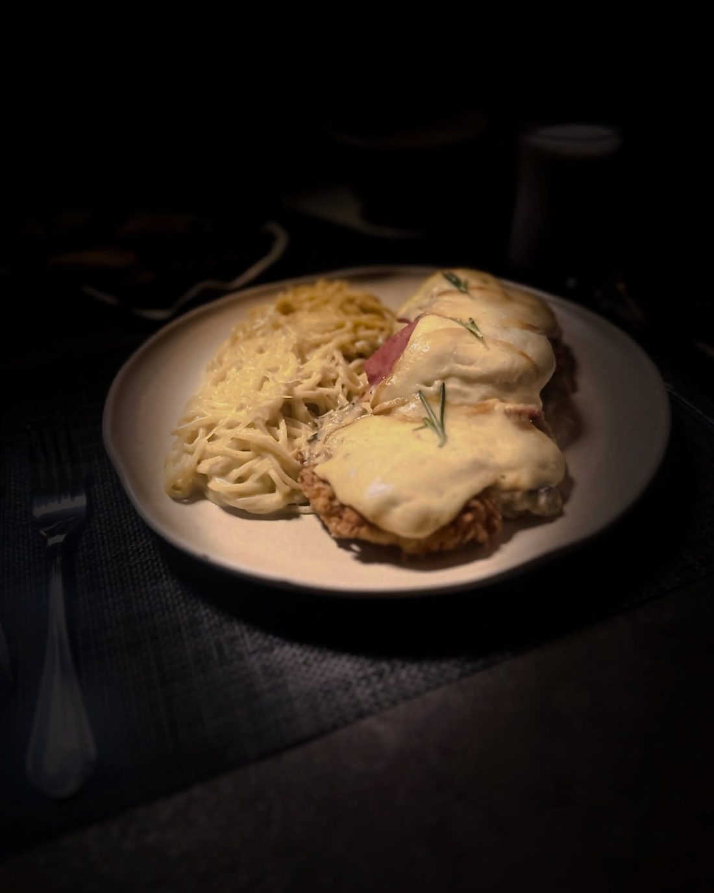
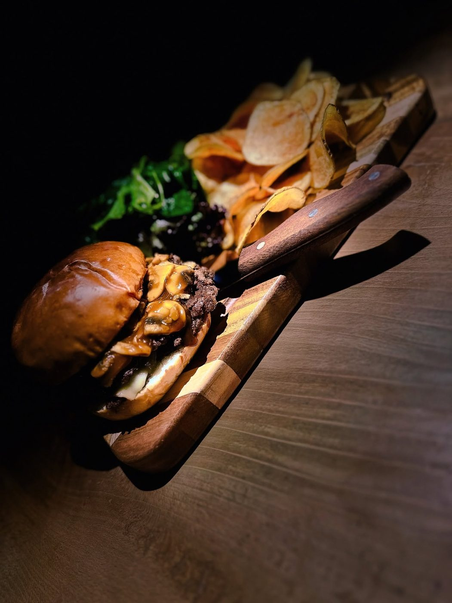
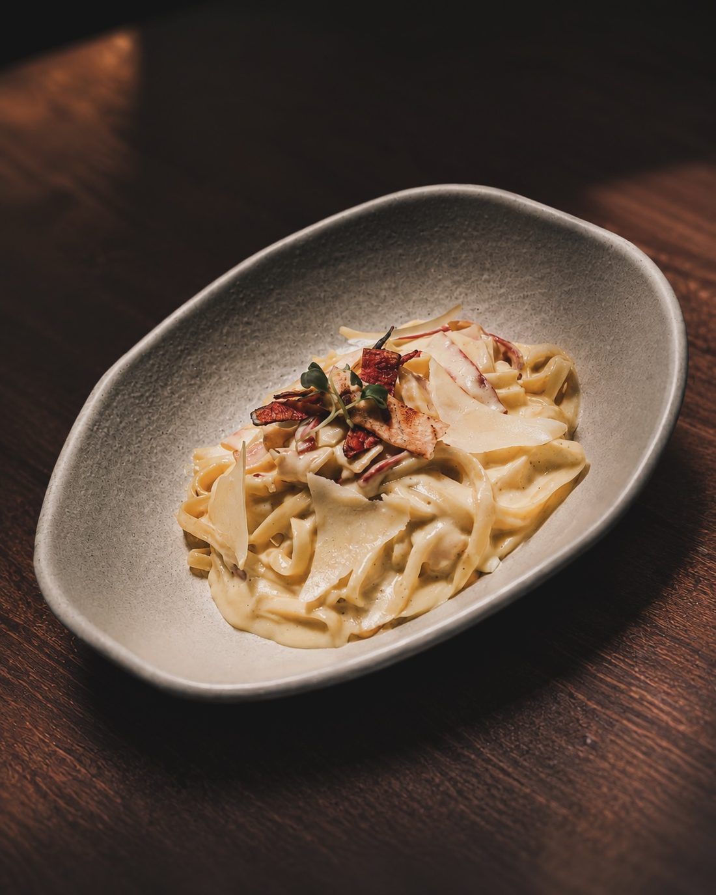
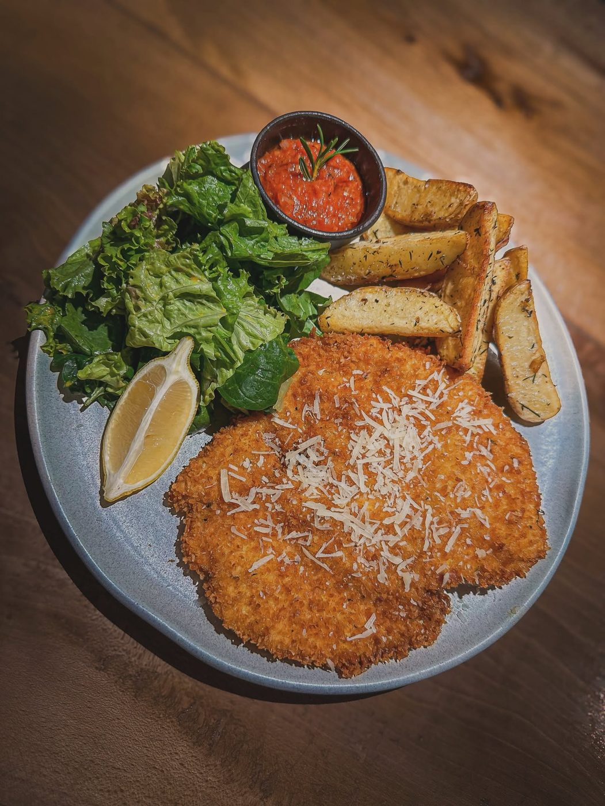
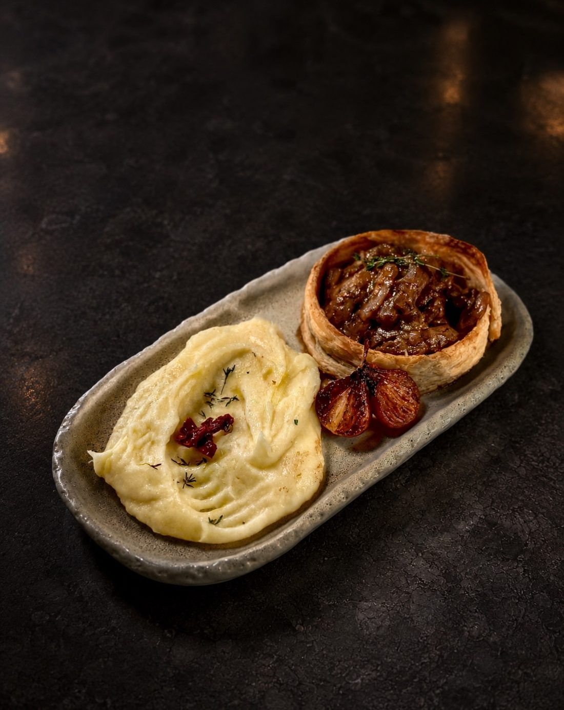

Glazed Lamb Shank & Creamy Grits
500g lamb shank in a pomegranate glaze, on creamy grits prepared risotto-style.
850
From Blues' own menu dated 24 Sep 2026. Prices in EGP, subject to 14% VAT and 12% service, and they may have changed since.

500g lamb shank in a pomegranate glaze, on creamy grits prepared risotto-style.
850
Arborio rice in caramelised onion sauce, beef fillet slices, Parmesan shavings.
410
Crisp fried chicken with smoked beef, smoked mozzarella and white mushroom sauce. With two sides or one pasta.
480
Two hand-pressed 200g patties, Gruyère, brown mushroom gravy, pepper-truffle aioli.
450
Creamy carbonara with smoked beef, smoked turkey and Parmesan shavings.
370
Herb-crusted schnitzel, potato wedges, citrusy mixed greens, house-made marinara.
380
Thinly sliced veal in a creamy-brown mushroom sauce, in a puff pastry ring, puréed potatoes.
600Add grilled chicken +45, pan-seared shrimps +85 or smoked salmon +95 to any salad.
Where noted, mains come with your choice of two sides or one pasta: white rice, puréed potatoes, fries or sautéed vegetables.
Grilled beef comes with a sauce of your choice: classic demi-glace, mushroom creamy-brown, peppercorn creamy-brown or truffle-infused cream.
All sandwiches come with french fries, citrusy mixed greens and a dip.
Beyond the alcohol, there is still a ritual to discover: smoke, spice, botanicals and the layers they leave behind. All alcohol-free.
Drinks are a shorter version of the printed list, which also has juices, milkshakes, iced coffee, frappé, soft drinks and more hot drinks.